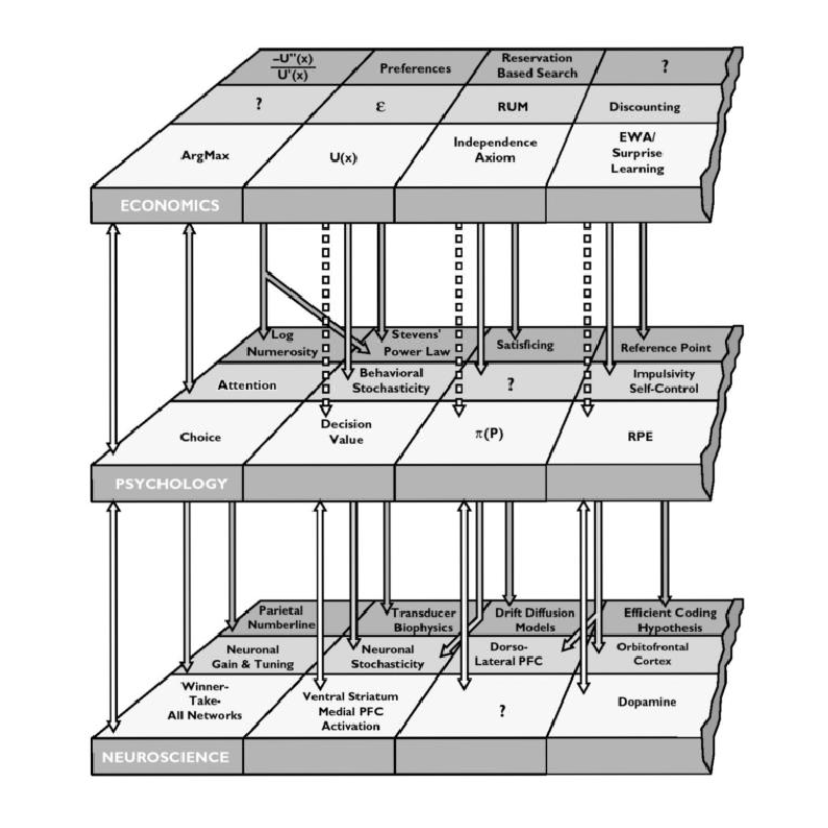

Fodor on reduction
Wed., Apr. 8
This online class session covers Fodor’s critique of ‘reductivism’ about the special sciences (more commonly called
reductionism), and his ‘non-reductive physicalism’.
Key Concepts: Intertheoretic Reduction, Token Physicalism, Non-Reductive Physicalism
Readings:
Fodor, “Special Sciences” (Textbook ch. 18)
Class Materials:
Other Resources:
Stanford Encyclopedia of Philosophy
Internet Encyclopedia of Philosophy
A Field Guide to the Philosophy of Mind